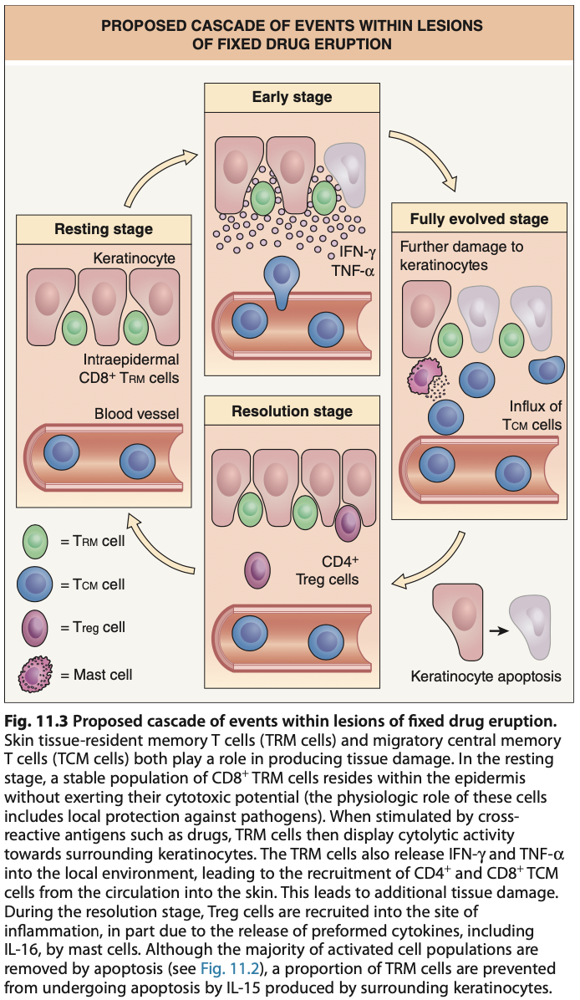
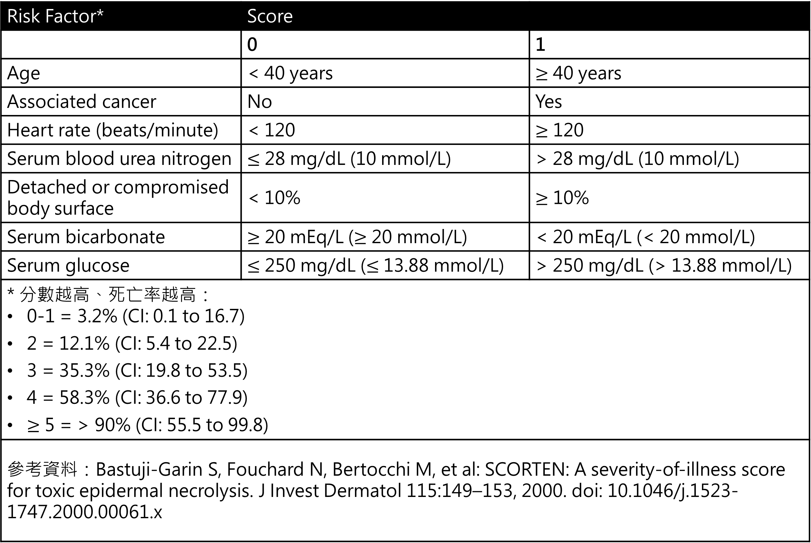

|
臨床表現 |
由藥物引發的可能性 |
發作起始時間 |
致死率 |
|
固定性藥物疹(Fixed drug eruption) |
100% |
初次：1–2 週 再次暴露：<48小時 (大多在24小時以內) |
0% |
|
Drug reaction with eosinophilia and systemic symptoms (DRESS)/drug-induced hypersensitivity syndrome (DIHS) |
70-90% |
15-40天 |
5-10% |
|
Stevens–Johnson syndrome Toxic epidermal necrolysis |
70-90% |
7-21天 |
5% 30% |
|
特徵 |
DRESS |
SJS/TEN |
AGEP |
|
發病時間 |
延遲 (2-8 週) |
早期 (7-21 天) |
非常迅速 (<4 天) |
|
皮膚特徵 |
麻疹樣變水腫、臉部水腫、可能多形性紅疹 |
暗紅斑塊伴表皮剝離，邊緣不清的靶心樣病灶 |
許多無菌性膿疱，紅斑水腫基底 |
|
黏膜受累 |
通常輕微或無 |
嚴重 ( >90% 病例) |
約 50% 病例 |
|
全身性受累 |
顯著，多器官受累常見 (肝、腎、肺等)2... |
通常有發燒等，但主要問題是表皮剝離21... |
少見 (~17%) |
|
實驗室異常 |
嗜酸性球增多，非典型淋巴細胞增多，肝臟酵素升高 |
血球低下 (淋巴球、嗜中性球、血小板) |
嗜中性球增多、輕度嗜酸球增多 |
|
組織病理 |
變異大，常有嗜酸性球浸潤，無廣泛表皮壞死 |
廣泛角質細胞壞死，表皮剝離，真皮發炎細胞稀少 |
角質層下膿疱，真皮血管周圍嗜中性球浸潤 |
|
常見病因 |
藥物 (抗癲癇藥、抗生素) |
藥物 |
藥物 |
|
病毒關聯 |
常伴 HHV-6 等再活化 |
可能與 Mycoplasma pneumoniae 或病毒有關，但不如藥物重要 |
少見，可能有病毒感染誘發 |
|
預後 |
潛在致命 (2-10%) |
高致死率 (SJS 5%、TEN 15-35%) |
低致死率 (1-2%)、自限性 |
- 名詞定義：
- 嚴重皮膚不良反應(Severe cutaneous adverse reactions, SCARs)
- Anaphylaxis
- Anticoagulant-induced skin necrosis
- Acute generalized exanthematous pustulosis (AGEP)
- Drug rash with eosinophilia and systemic symptoms (DRESS)/drug-induced hypersensitivity syndrome (DIHS)
- Generalized bullous fixed drug eruption
- Stevens–Johnson syndrome (SJS)/ toxic epidermal necrolysis (TEN)
- 固定性藥物疹(Fixed drug eruption)
- 定義：
- 初次接觸：初次接觸特定藥物引發固定性藥物疹時，病灶通常會在給藥後幾天到兩週內 (1-2 週)出現
- 再次接觸：再次接觸同種藥物時，病灶會在完全相同的部位快速復發
- 復發的發生速度會非常快(<48 小時，通常在 24 小時內)
- 病因：
- 過敏引起的皮膚血管炎反應
- 常見引起藥物診藥物：
- 抗生素：
- Sulfa類(最常見)、Tetracyclines > β-lactams、fluoroquinolones、macrolides
- 止痛退燒藥：
- NSAIDs、acetaminophen、aspirin
- 其他藥物：
- Barbiturates、Dapsone、PPI、Azole類抗黴菌藥物、Pseudoephedrine
- 病生理：Type 4過敏反應

- 臨床表現：
- 發病時間：
- 初次接觸： 1-2 週後出現
- 再次接觸：<48 小時，通常在 24 小時內
- 常見部位：生殖器、肛門周圍 、手腳、臉部、嘴唇
- 發作型態：
- 邊界清晰、卵圓形紅斑塊(通常為單一)伴隨著搔癢及發熱症狀→水腫狀斑塊→脫屑(desquamation)並產生色素沈著(棕色、黑色斑)
- 可能有標靶病變(target lesion)
- 每次服用相同藥物後，都會在相同部位出現藥物疹的現象
- 診斷：
- 主要基於病史(包括用藥史和病灶復發的特徵)、臨床表現
- 皮膚激發(provocation test)試驗
- 建議在過敏發作結束後一段時間內(4-6週)進行，以免受耐受期(refractory period)影響
- 協助釐清致病藥物
- 試驗種類：
- oral challenge test
- 病人暴露於懷疑藥物中，增加劑量直到給予完整劑量或發生過敏反應為止
- 測試過程中能耐受藥物並完成完整劑量，則表示病人對該藥物沒有藥物過敏反應
- skin patch test(陽性率>40%)
- 貼於上背部並保留48小時
- 在 3-7 天時進行判讀
- 建議在曾有病灶的部位進行原位貼膚試驗 (in situ patch test)
- 處置：
- 立即停用懷疑致病藥物
- 預後：
- 通常是自限性疾病，通常在停藥後幾天內消退(可能需1-2週才能完全消退)
- 再次用藥時可能復發
- Stevens-Johnson syndrome(SJS)、毒性表皮壞死溶解症(Toxic epidermal necrolysis, TEN)
- 定義：依水泡、破皮面積佔全身體表面積(body surface area, BSA)比例
- SJS：<10% BSA
- SJS-TEN overlap：10-30% BSA
- TEN：>30% BSA
- 流行病學：
- 女 > 男(1.5：1)
- 發病年齡：任何年齡都可能發生
- 病因：幾乎是藥物造成、感染/疫苗相對罕見
- 常見藥物：抗癲癇藥物(carbamazepine、phenytoin、Lamotrigine)、allopurinol、sulfa類抗生素、NSAID
- 亞洲種族：HLA-B基因型與特定藥物所引起的SJS/TEN相關
- HLA-B*1502(carbamazepine、phenytoin、Lamotrigine)
- HLA-B*5801(allopurinol)

(參考資料)Dermatology 4th ed. p.349
- 病生理：
- 目前認為和藥物激發Type 4過敏反應有關
- 透過與人類白血球抗原(HLA)的交互作用活化特異CD8+T cell→T cell增生、浸潤到皮膚組織中攻擊表皮細胞→表皮細胞大量的凋亡(apoptosis)
- 皮膚切片中會看到整層表皮的壞死與溶解
- 臨床表現：
- 前驅症狀：被觸發後1-3週
- 發燒、喉嚨痛
- 肌痛、關節痛
- 頭痛
- 結膜發紅、嘴巴破皮、生殖泌尿道等黏膜破皮
- 皮膚黏膜病變：前驅症狀出現後1-3天
- 皮膚病變：影響所有患者
- 臉部和軀幹最初出現疼痛性紅斑，中心呈紫斑狀(非典型target lesion)
- 快速擴散並融合成大水泡(bullae)，擴展至廣泛表皮壞死、真皮/表皮分離與表皮脫落
- 表皮脫落後1-2週再上皮化(Reepithelialization)
- Nikolsky sign(+)
- 黏膜病變： ≧ 90%患者
- 口腔：口腔炎、唇炎、潰瘍
- 眼部：結膜炎、角膜炎、虹膜炎、前葡萄膜炎
- 生殖泌尿道：生殖器糜爛(如龜頭糜爛、外陰糜爛、陰道糜爛)、尿道糜爛
- 診斷：
- 臨床診斷：根據病史、黏膜皮膚病變診斷
- 確認診斷：皮膚切片(裂解位置：Stratum germinativum)

- 併發症：
- 大面積皮膚脫落，剩下真皮層裸露在外
- 急性：脫水、體溫/電解質失調、低血容性休克、繼發性感染、敗血症和感染性休克
- 眼科：眼部疤痕和視力喪失(最常見)、乾性角結膜炎、睫毛倒刺(Trichiasis)
- 皮膚科：色素沉澱、色素沉澱過少、掉髮、指甲脫落
- 泌尿生殖系統：尿道狹窄、陰道沾黏、性交困難、包莖、性功能障礙
- 胃腸道：狹窄、緊縮、吞嚥困難
- 處置：
- 立即停用懷疑致病藥物
- 支持性療法：與大面積燒傷類似，維持生理穩定、預防併發症發生
- 傷囗、黏膜照護
- 非脫皮區域保持乾燥
- 臉部：結痂以生理食鹽水每日清洗，必要時使用抗生素藥膏
- 眼睛：每日眼科評估，生理食鹽水清洗 + 抗生素眼膏與眼藥水
- 口腔：定時以生理食鹽水沖洗，昏迷者需抽吸避免吸入性肺炎
- 鼻腔、耳朵：棉棒清潔 + 抗生素或凡士林藥膏
- 肛門生殖區、指間：每日清潔，潮濕導致浸潤(maceration)者可用0.5%硝酸銀溶液
- 維持電解質及體液平衡
- 適當鎮靜止痛
- 良好呼吸照護
- 系統性治療
- 類固醇
- 免疫抑制劑
- IVIG、血漿交換術：移除血中免疫活性物質、降低過敏反應
- 預後：
- SJS平均死亡率：1-5%
- TEN平均死亡率：25-35%
- 預後評估：Severity-of-Illness Score for Toxic Epidermal Necrolysis (SCORTEN)

- Drug reaction with eosinophilia and systemic symptoms (DRESS) = Drug-induced hypersensitivity syndrome (DIHS)
- 定義：
- 罕見、潛在致命的免疫介導性藥物不良反應，特徵是皮膚表現伴隨內部器官影響
- 病因：
- 幾乎由藥物引起(70-90%)
- 抗癲癇藥：lamotrigine、phenytoin、carbamazepine、phenobarbital、oxcarbazepine、zonisamide
- 抗生素：dapsone、sulfamethoxazole/trimethoprim、piperacillin/tazobactam、vancomycin、minocycline、abacavir、nevirapine、磺胺類藥物、rifampicin
- Allopurinol
- HHV-6初次感染或再次活化
- 危險因子：免疫低下族群、藥物基因易感性(Pharmacogenetic susceptibility)
- 病生理學：
- 遺傳易感性與Type 4過敏反應之間的相互作用
- 與IL-5活化嗜酸性細胞增生、皮膚和內臟器官中藥物特異性 T cell活化有關
- 臨床表現：
- 發病時間 (Time interval)
- 初次接觸：通常在藥物暴露後 2-8 週出現症狀
- 再次接觸：暴露後數小時或數天
- 症狀：
- 發燒(通常是高燒，>38.5°C，伴隨高低起伏)(85%)
- 瀰漫性皮疹(75%)：以麻疹樣皮疹開始，隨後變為水腫樣
- 淋巴結腫大
- 臉部水腫
- 內部器官影響(見"併發症")
- 診斷：
- 主要基於臨床表現(發燒、瀰漫性皮疹)、詳細的藥物史(最近 2-8 週內開始使用的藥物)、是否有內部器官受影響、是否有嗜酸性球增加(常見)綜合判斷
- RegiSCAR score：協助診斷DRESS
|
項目 |
Yes |
No |
Unknown |
說明 |
|
發燒 >38.5°C |
0 |
-1 |
-1 |
必要項目之一 |
|
淋巴結腫大（≥2處，且每處>1 cm） |
1 |
0 |
0 |
典型表現 |
|
非典型淋巴球（Atypical lymphocytes） |
1 |
0 |
0 |
|
|
嗜酸性球 |
|
|
|
以下擇一計分 |
|
700–1499 或佔白血球10–19.9% |
1 |
0 |
0 |
|
|
≥1500 或 ≥20% |
2 |
0 |
0 |
|
|
皮疹 |
|
|
|
以下三項獨立計分 |
|
面積 >50% 體表面積 |
1 |
0 |
0 |
|
|
具2種以上特徵(如水腫、浸潤、紫癜、脫屑) |
1 |
-1 |
0 |
|
|
皮膚切片符合 DRESS |
0 |
-1 |
0 |
|
|
器官影響 |
|
|
|
以下擇一計分 |
|
一個器官 |
1 |
0 |
0 |
|
|
兩個以上器官 |
2 |
0 |
0 |
|
|
症狀持續超過15天 |
0 |
-1 |
-1 |
|
|
已排除其他診斷(完成至少3項生化檢查且為陰性) |
1 |
0 |
0 |
|
|
總分與診斷標準 |
|
|
|
|
|
≤1 否定(No case) 2–3 可能(Possible case) 4–5 可能性高(Probable case) ≥6 確診(Definite case) |
|
|
|
|
- 處置：
- 立即停用懷疑致病藥物
- 全身性類固醇(PO、IV)：1st line，通常需要長時間的逐漸減量
- 其他治療：cyclosporine、cyclophosphamide、血漿置換術、IVIg
- 通常用於難治性病例或對皮質類固醇有禁忌症時
- 併發症：
- 其他器官侵犯：常見影響器官包括肝臟(最常見)、腎臟、肺部、心臟、肌肉、胰臟
- 肝臟：肝臟壞死、衰竭
- 腎臟：GFR↓、急性間質腎炎
- 心臟：心肌炎
- 肌肉：肌肉痠痛、無力
- 胰臟：amylase/lipase↑、胰臟炎
- 多重器官衰竭
- 預後：
- 死亡率約2-10%
- 肝臟壞死導致肝臟衰竭為主要死因
- 延遲停藥會使預後惡化
- 症狀可能需要數週或數月才能緩解
- 急性廣泛性發疹性膿疱病 (Acute Generalized Exanthematous Pustulosis, AGEP)
- 流行病學：
- HLA-B5、-DR11、-DQ3 在 AGEP 患者中更常見
- 病因：最常見的原因是藥物(超過90%病例)
- 常見藥物：
- 抗生素：Penicillins、Cephalosporins、Clindamycin、磺胺類藥物、Metronidazole、Carbapenems、Quinolones、Macrolides
- 鈣離子通道阻滯劑 (Calcium channel blockers)：特別是Diltiazem
- 其他罕見原因包括：
- 病毒感染(如腸病毒)
- 汞
- 疫苗
- 胰島素注射(罕見)
- 病生理學：Type 4過敏反應
- 臨床表現：
- 發病：非常迅速，通常在給藥後短於 4 天出現皮疹。再次接觸致病藥物時，發病時間會更短
- 皮膚病灶：
- 皮疹通常開始於臉部或主要的皺摺區(如腋窩和腹股溝)，然後在數小時內擴散全身，通常持續 1-2 週
- 特徵為大量、微小 (<5 mm)、主要為非毛囊性、無菌性膿疱
- 發生在全身的水腫性紅斑皮膚上，膿疱可能匯合
- 消退後通常會出現表面脫屑
- 可能伴隨灼熱感、瘙癢
- 黏膜侵犯(50%)
- 全身症狀：
- 常伴隨高燒 (通常 ≥ 38.5°C)
- 少數患者(17%)有全身系統侵犯
- 主要部位是肝臟、腎臟和肺部(急性呼吸窘迫)
- 其他特徵：
- 白血球升高伴明顯嗜中性球增多、輕度至中度嗜酸性粒細胞增多
- 短暫腎功能不全
- 肝功能異常
- 低血鈣
- 處置：
- 立即停用所有可能的致病藥物
- 支持性治療
- 通常不常規推薦預防性抗生素，除非有感染跡象
- 預後：
- 通常是自限性疾病
- 皮疹通常在停藥後 1-2 週內消退
- 不會進展為毒性表皮壞死症 (TEN)
- 死亡率相對較低(約1-2%)